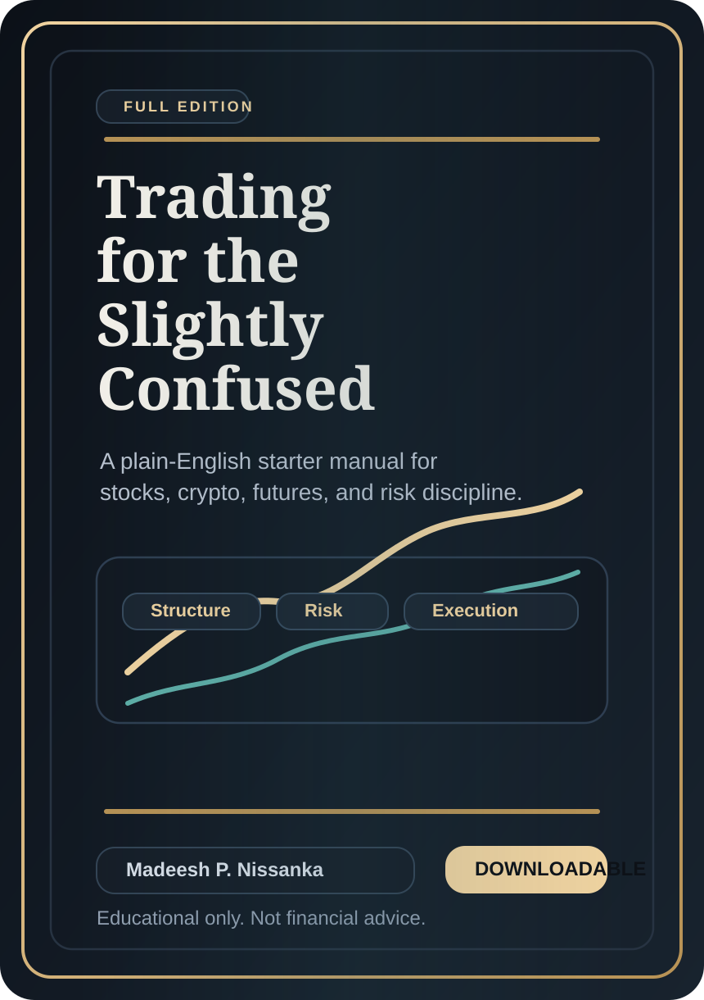

01
Liquidity Regimes
How rates, policy shifts, and dollar conditions cascade across risk assets.
Official website
Cross-asset market commentary at the intersection of digital assets, listed equities, liquidity regimes, and macro-sensitive positioning. The site is structured as the public-facing home for market context, long-form conversation, and institutional-style presentation.

A flagship beginner manual covering market structure, execution discipline, risk control, and the review habits that shape better decision-making.
Readers can move straight into the full edition or download the PDF directly from the homepage without leaving the main profile.
Profile
Madeesh P. Nissanka is presented here as a markets-focused voice covering digital assets, index leadership, futures, and macro liquidity with a disciplined, editorial style.
The structure is deliberate: a live desk for market context, a clear biography, and an educational product layer that reads more like a serious platform than a generic personal homepage.
01
How rates, policy shifts, and dollar conditions cascade across risk assets.
02
Bitcoin, Ethereum, positioning flows, and the market architecture around them.
03
ETF demand, index leadership, futures references, and capital rotation signals.
04
Podcast-style conversation, market notes, and disciplined public commentary.
Platform Architecture
A structured presence across market tools, educational products, and long-form commentary.
Media Presence
Built to support interviews, desk updates, and research-led market discussion under one public identity.
Studio conversation
Designed for podcast-style conversations on macro liquidity, digital asset adoption, and equity market leadership.
Roundtable format
A visual language that supports panels, fireside chats, and high-signal market narratives without looking retail or promotional.
Editorial layer
A research-oriented presentation designed to feel more like a serious market platform than a generic personal homepage.
Disclaimer
Madeesh P. Nissanka is not a financial advisor, broker, or investment adviser. All material on this website is for educational and informational purposes only and should not be treated as financial, investment, tax, or legal advice.
No promise or guarantee of profit is made. Stocks, crypto, futures, and all financial markets involve substantial risk, and you remain solely responsible for your own decisions, due diligence, and outcomes.